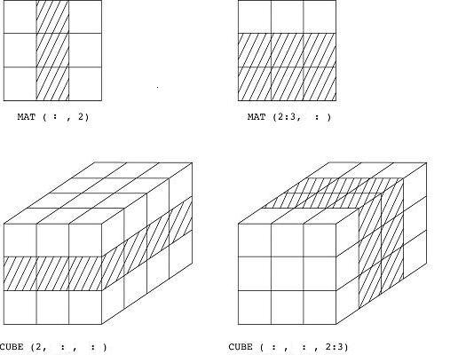
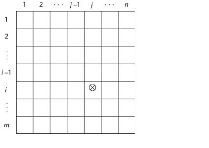

The richness of the data types in a language largely determines language style and usefulness
Primitive Data Types
A "descriptor" for a data type (int, float, double, etc.) determines
the range and kind of values, the size of storage, and allowable operations
(see ANSI C data types))
All languages have a set of primitive data types; e.g. built-in and not
defined in terms of other data types
Primitive data types of most imperative languages: integer, float, character,array
Some primitive data types are merely reflections of the hardware
Others require some non-hardware support
The size of a data type is platform dependent in C/C++ but not in Java
see C's /usr/include/limits.h
Integer
Almost always an exact reflection of hardware so mapping is trivial C example
There may be as many as 8 different integer types in a language (e.g. GNU C)
Java's signed integer sizes: byte, short, int, long (no unsigned int)
Negative integers primarily stored in two's-complement
Floating Point
Approximates real numbers as floating point w/ fraction and exponent
Usually two floating-point types - float and double- sometimes more
Most common standard: IEEE Floating-Point Standard 754
sign exponent fraction
-----|------------|---------------- = 32 bits (single-precision)
1 bit 8 bits 23 bits
------------------------------------
31 0
sign exponent fraction
-----|------------|---------------- = 64 bits (double-precision)
1 bit 11 bits 52 bits
Rounding problem: floating point to binary conversion
Decimal
For business applications (money); Essential to COBOL
Unlike decimal floating point, NO ROUND-OFF ERRORS
C# decimal data type
BCD (binary coded decimal) encoding takes more space than a binary encoding
A decimal digit 0-9 requires 4 bits.
Binary encoding of 255 can be done in 8 bits: 1111 1111
BCD encoding of of 255 requires 3*4=12 bits: 0010 0101 0101
Advantage: accuracy (solves floating point rounding problem)
Disadvantages: limited range, wastes memory
Boolean
Range of values: two elements, one for true and one for false
Could be implemented as bits, but often as bytes
Advantage: readability
Character
Stored as numeric codings
Most commonly used coding: ASCII
UNICODE 16-bit coding (see unicode charts) (see HTML unicode)
UNICODE supports characters from most natural languages plus symbols
Example: Ð is the Icelandic Capital Eth
Originally used in Java, C# and JavaScript also support Unicode
Character String Types
Values are sequences of characters
Design issues:
Is it a primitive type (Perl) or a special kind of array or class (C/C++)?
Should length of strings be static or dynamic?
o Character String Type Operations
Assignment and copying
Comparison (=, >, etc.)
Catenation
Substring reference
Pattern matching - Perl (try these out in vim)
some metacharacters:
? 0 or 1 time
* 0 or more times
+ 1 or more times
[] marks a character class to match a single character
^ negation inside []; anchor at beginning of line otherwise
$ marks end of line
() substring deliminters (must be escaped in vim)
$1 refers to first matched substring (this is \1 in vim)
{} a{n} means match 'a' exactly "n" times
some of Perl's abbreviations
\d is a digit and represents [0-9]
\s is a whitespace character and represents [\ \t\r\n\f]
\w is a word character (alphanumeric or _) and represents [0-9a-zA-Z_]
\D is a negated \d; it represents any character but a digit [^0-9]
\S is a negated \s; it represents any non-whitespace character [^\s]
\W is a negated \w; it represents any non-word character [^\w]
The period '.' matches any character but "\n"
Ex.
$x = 'the cat in the hat';
$x =~ /^(.*)(at)(.*)$/; #$1 = 'the cat in the h'; $2='at'; $3=''(0 matches)
What do these regexes match?
/^[A-Za-z][A-Za-z\d]+/
/[yY][eE][sS]/;
/[0-9a-fA-F]/;
/[^0-9]{4}/;
Substring replacement (substitution) syntax:
s/regex/replacement/modifiers
ex.
/^'(.*)'$/$1/; # strip single quotes that occur at start and end of line
Try out a few thing with this file in vim.
o Character String Type
Not primitive in C - must use char arrays and a few low-level utilities (see string.h)
Not primitive in C++ (but provided in Standard Template Library string class)
see docs and sample code
Primitive in SNOBOL4 (a string manipulation language) ; many operations
and elaborate pattern matching
Primitive in Java as a String class (don't need to include anything extra)
o Character String Length Options
1. Static: COBOL, Java's String class
2. Limited Dynamic Length: C/C++ \0 marks end of string in fixed array (example)
3. Dynamic (no maximum): SNOBOL4, Perl, JavaScript
Ada supports all three string length options
o Character String Type Evaluation
Aids writability
Inexpensive as a primitive type with static length-why not have them?
Dynamic length is nice, but is it worth the expense?
o Character String Implementation
1. Static length: need compile-time descriptor for length and address
2. Limited dynamic length: may need a run-time descriptor for length
(not in C and C++)
3. Dynamic length: need run-time descriptor for address, max length and
current length; allocation/de-allocation biggest implementation problem
User-Defined Ordinal Types
A data type that denotes position in an ordered sequence - must be mapped to integers
Enumeration Types: All possible values are named constants in the definition
C# example: enum days {mon, tue, wed, thu, fri, sat, sun}; (see C example)
Design issues
Can enumeration constant appear in more than one type definition, if so,
how is the type of an occurrence of that constant checked?
Are enumeration values coerced to integer?
Any other type coerced to an enumeration type?
o Evaluation of Enumerated Type
Aid to readability, e.g., no need to code a color as a number
Aid to reliability, e.g., compiler can check operations (don't allow colors to be added)
No enumeration variable can be assigned a value outside its defined range
Ada, C#, and Java 5.0 provide better support for enumeration than C++; e.g.
enumeration type variables are not coerced into integer types
Subrange Types: An ordered contiguous subsequence of an ordinal type
Def: an ordinal type is countable and ordered (real numbers are not countable)
Example: 12..18 is a subrange of integer type
Adas design
type Days is (mon, tue, wed, thu, fri, sat, sun);
subtype Weekdays is Days range mon..fri;
subtype Index is Integer range 1..100;
Day1: Days;
Day2: Weekday;
Day2 := Day1;
o Subrange Evaluation
Aids readability
Makes clear that variables of subrange can store only certain range of values
Reliability
Assigning a value to a subrange variable outside range is a syntax error
o Implementation of User-Defined Ordinal Types
Enumeration types are implemented as integers
Subrange types implemented like parent types with code inserted by
compiler to restrict assignments to subrange variables
ARRAY TYPES
Arrays included in most languages
An array is an aggregate of contiguous, homogeneous data elements where
individual elements are identified by position relative to the first element
o Array Design Issues
What types are legal for subscripts?
Are subscripting expressions in element references range checked?
When is the subscript range bound (when is the size of array determined)?
When does allocation take place?
What is the maximum number of subscripts?
Can array objects be initialized?
Are any kind of slices allowed?
o Array Indexing
Indexing (or subscripting) is a mapping from indices to elements
array_name (index_value_list) -> an element
- Index Syntax
Most languages use brackets
FORTRAN, PL/I, Ada use parentheses
Ada explicitly uses parentheses to show uniformity between arrays and
function calls; e.g. both are mappings
- Arrays Index (Subscript) Types
FORTRAN, C: integer only
Pascal: any ordinal type (integer, Boolean, char, enumeration)
Ada: integer or enumeration (includes Boolean and char)
Java: integer types only
- Range Checking
C, C++, Perl, and Fortran do not specify range checking
Java, ML, C# specify range checking
o Array Allocation Categories
C Example of all five methods
Static: the subscript range is statically bound and storage
allocation is also at compile time (not on the runtime stack)
Advantage: efficiency (no dynamic allocation)
Fixed stack-dynamic: the subscript range is statically bound, but
allocation is done at declaration time during function call
Advantage: space efficiency
Stack-dynamic: the subscript range is dynamically bound and the
storage allocation is dynamic (on run-time stack)
Advantage: flexibility (the size of an array need not be known until the
array is to be used)
Fixed heap-dynamic: similar to fixed stack-dynamic: storage binding
is heap dynamic but the size of the array is fixed
Heap-dynamic: binding of the subscript range and storage allocation
are both dynamic and can change during execution
Advantage: flexibility (arrays can grow or shrink during program execution)
C and C++ arrays that include static modifier are static
C and C++ arrays without static modifier are fixed stack-dynamic
Ada arrays can be stack-dynamic
C and C++ provide fixed heap-dynamic arrays
C# includes a second array class ArrayList that provides fixed heap-dynamic
Perl and JavaScript support heap-dynamic arrays
o Array Initialization
Some languages allow initialization at the time of storage allocation:
// C, C++, Java, C#
int list [] = {4, 5, 7, 83} <== an aggregate constant is assigned to list
char name [] = "freddie"; // C and C++
char *names [] = {Bob, Jake, Joe}; // C and C++
String[] names = {Bob, Jake, Joe}; // Java String objects
o Array Operations
APL has the most powerful array processing operations for vectors, matrixes
and unary operators (for example, to reverse column elements)
Ada allows array assignment and catenation
Fortran provides elemental operations because they are between pairs of
array elements; e.g. a pairwise sum of two arrays:
1,2,3,4 + 2,3,1,5 = 3,5,4,9
Perl array operations
o Rectangular and Jagged Arrays
An array in C has only one dimension, but you can create a abstract type of array of arrays
A rectangular array is a multi-dimensioned array with all rows having the
same number of elements and all columns have the same number of elements
A jagged matrix has rows with varying number of elements
Possible when multi-dimensioned arrays appear as arrays of arrays
or when an array of pointers to a union type
C example
o Slices
A slice is a method to reference a substructure of an array
mechanism (only useful in languages that have array operations)
Assume, the following array declarations in Fortran 95:
Integer, Dimension (10) :: Vector // a 1-dimensional array
Integer, Dimension (3, 3) :: Matrix // a 2-dimensional array
Integer, Dimension (3, 3, 4) :: Cube // a 3-dimensional array
Slice Examples:
Vector (3:6) is a four element array
Mat (:,2) is the second column of Mat (an array)
Mat (2:3,:) is the 2nd and 3rd rows of Mat (a matrix)
Cube (2,:,:) is a matrix
Cube (:,:,2:3) is another 3-dimensional array

Ex. slices in Perl
o Implementation of Arrays
Access function maps subscript expressions to an address in the array
Access function for single-dimensioned arrays:
address(list[k]) = address (list[lower_bound]) + ((k-lower_bound) * element_size)
Accessing Elements Multi-dimensioned Arrays
Two common ways:
Row major order (by rows) used in most languages
column major order (by columns) used in Fortran
In row major, the physical address of the kth element in row i and col j is
computed as (where n_cols is the number of columns):
array_starting_address + ((i * n_cols + j) * element_size)

Compile-Time Descriptors for arrays
All arrays: starting address, element type, index type
Single-dimensional:
index range (e.g. lower and upper bound)
Multi-dimensional:
index range 1 ... index range n, number of dimensions
Associative Arrays (Hash tables, Hash maps)
An unordered collection of data elements indexed by an
equal number of
values called keys
User defined keys must be stored
Design issues: What is the form of references to elements
Example: a hash in Perl
supported in Java/C++/JavaScript